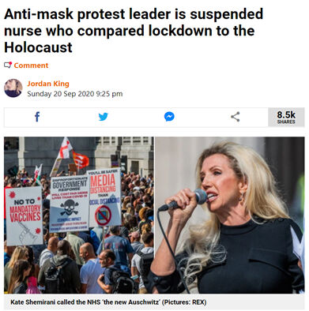

За полазнике
За тренере
За полазнике
За тренере
Модул 3: Узроци и последице информационог загађења
Опис модула
Основни циљ овог модула је да представи узроке и последице информационог загађења, како би се повећала свест полазника о мотивима који стоје иза стварања информационог загађења и његовим могућим утицајима
Секундарни циљ је да усмери тренере који желе да користе садржај овог модула за обуку својих полазника.
Уз ове циљеве, у овом модулу су обухваћени мотиви који стоје иза креирања и ширења лажних или обмањујућих информација, и њихов утицај на јавност и демократије, заједно са смерницама о томе како да се предмет предаје.
Полазници који успешно заврше овај модул моћи ће да:
- разумеју намере и мотивације која стоји иза информационог загађења
- разумеју последице информационог загађења
- разумеју сопствену одговорности у борби против информационог загађења
Поред тога, тренери који успешно заврше овај модул, моћи ће да покажу разумевање смерница за подучавање овог предмета..
Структура модула
Овај модул се састоји из следећих целина:
- Опис модула (циљеви, опис садржаја и исходи учења)
- Структурa модула
- Смернице за полазнике
- Смернице за тренере (како се припремити, методе које треба користити и савети за тренере
- Садржај (материјал за учење и вежбање)
- Квиз
- Референце (цитирани извори, препоручени извори и видео-записи)
Главни циљеви модула, опис садржаја и исходи учења објашњени су у делу Опис модула. Садржај обухвата све материјале за учење и вежбања везана за садржај. Квиз укључује питања са вишеструким избором како би полазници тестирали свој напредак. Одељак Референце обухвата списак извора цитираних у садржају модула и листу додатних извора и видео-записа који се препоручују за читање и гледање како би се проширило знање о овој теми. Смернице за полазнике укључују упутства и сугестије за полазнике. Смернице за тренере воде тренере кроз различите фазе обуке и дају савете који би могли да буду корисни током предавања предмета.
Смернице за полазнике
Од полазника се очекује да прочитају текст, пажљиво проуче дате примере, погледају препоручене видео-записе и ураде вежбања. Они могу да консултују предложене ресурсе за додатне информације. Након проучавања садржаја, полазницима се препоручује да ураде квиз како би проценили свој напредак. Они могу поново проучити материјал за учење када и уколико је потребно.
Смернице за тренере
Смернице за тренере укључују сугестије и савете за тренере о томе како да користе садржај овог модула за обуку полазника о узроцима и последицама информационог загађења.
Припрема
Припремите презентацију (Пауерпоинт/Прези/Канва) која је обогаћена визуелним материјалима (слике и видео клипови) и јасним примерима. Одаберите и представите локалне примере (специфичне за земљу) из актуелних или познатих случајева са јасним мотивима и добро познатим последицама. Што су примери познатији и популарнији, то ће порука бити боље пренета. Локални (национални) медији и платформе за проверу чињеница могу бити добар извор за широк спектар студија случаја информационог загађења, чије су последице у стварном животу већ објављене и детаљно разрађене.
Почетак
Како бисте увели полазнике у тему, на почетку можете користити кратак квиз (3 до 5 питања) направљен у Кахуту или им поставити питања путем Ментиметар апликације. Поменути квиз и питалице се могу користити као мотивационо средство и средство за проверу постојећег знања полазника о овој теми.
Методологија
Током обуке могу се комбиновати различите наставне методе:
- Предавања
- Дискусије
- Рад у групама
- Самопроцењивање
Савети за тренере
Загревање
Ефикасан начин укључивања полазника и утврђивања заједничких очекивања о томе шта ће научити јесте постављање неколико прелиминарних питања о овој теми. На пример, можете питати полазнике:
- Ко шири лажне информације?
- Зашто људи шире лажне информације?
- Да наведу пример озбиљних последица дезинформација на који су наишли.
- Да ли су икада поделили лажне информације. Ако јесу, која је била њихова намера и мотивација?
Након дискусије, уверите се да полазници разумеју намеру и разликују главну мотивацију која стоји иза креирања и ширења лажних и обмањујућих информација. Полазници такође треба да разумеју да информационо загађење увек има неке последице и да су људи који креирају и/или шире дезинформације и мисинформације одговорни за њихове последице.
Представљање циља лекције
Циљ лекције треба да буде јасан (информисање полазника о узроцима и последицама информационог загађења). Након питања за загревање, лакше ћете разјаснити циљеве.
Представљање садржаја лекције
Приликом представљања садржаја водите рачуна о интеракцији са полазницима и подстакните их на активно учешће.
- Пре него што дате преглед мотива који стоје иза информационог загађења, замолите учеснике да сами изложе могуће узроке.
- Када дајете примере, изаберите примере из стварног света и сазнајте што више информација о том конкретном случају који износите како бисте полазницима пружили више детаља уколико вас питају.
- Када бирате примере, уверите се да су мотивација и последице познате или да се могу јасно идентификовати. У појединим случајевима главна мотивација може бити нејасна.
- Наведите неке примере дезинформација са детаљима (уколико немате пример из стварног света, напишите неки сценарио) и замолите учеснике да елаборирају намеру и могућу мотивацију иза њих.
- Наведите неке примере дезинформација са детаљима (уколико немате пример из стварног света, напишите неки сценарио) и замолите учеснике да елаборирају могуће ефекте (последице).
Закључак
Направите кратак резиме лекције и поставите неколико питања која ће вам помоћи да истакнете најважније поруке које желите да пренесете.
- Замолите полазнике да опишу информацију на коју су наишли и која је на први поглед изгледала као безопасна, али се касније испоставило да изазива озбиљне проблеме
- Питајте полазнике зашто је важно да уоче разлику између поузданих и погрешних информација? (Посебно у контексту политике и јавног здравља)
Након дискусије, уверите се да полазници могу да разумеју главне мотиве ширења дезинфомација и мисинформација и њихове последице. Полазници такође треба да схвате да степен штете коју лажне информације могу да проузрокују може варирати, али да је свако ко их дели одговоран за последице.
Садржај: Узроци и последице информационог загађења
Увод
Разумевање намера и мотива који стоје иза информационог загађења је важно како бисмо могли да се боримо против њега, јер иза производње и ширења лажног или обмањујућег садржаја стоје различите намере и мотиви. На пример, као што је поменуто у Модулу 2, дезинформације (лажни садржај) и злонамерне информације (прави садржај) се деле намерно како би се нанела штета (финансијска, репутациона, политичка или чак физичка). Мисинформације (лажни садржај) иако немају намеру да учине штету, могу ненамерно до тога да доведу (Wardle, 2020). Било намерно или не, информационо загађење увек има неке последице.
Разумевање мотива
Постоје четири главна мотива за креирање лажног и обмањујућег садржаја: Постоје четири главна мотива за креирање лажног и обмањујућег садржаја. Мотивисани су жељом да се обликује и утиче на јавно мњење и промовишу одређене идеје, идеологије, партије или људи (Allcott & Gentzkow 2017, стр. 217; Cooke, 2018; Wardle, 2020). Други мотив је финансијски. Од оглашавања на веб-сајту кроз сензационалистички или лажан чланак, наслов или слику, могуће је зарадити новац. Овде се подстиче кликбејт како би се остварио приход. Лажни или пристрасни садржаји се такође креирају да би промовисали одређени производе или услуге, понекад дискредитујући друге (Allcott & Gentzkow 2017, стр. 217; Wardle, 2020). Трећи је друштвени и/или психолошки. Поједини људи су мотивисани само жељом да изазову невоље. Желе да виде да ли могу да заварају новинаре или да провоцирају људе. Други деле мисинформације како би представили одређени идентитет (Wardle, 2020). Потреба за допадљивошћу, тренутним задовољством и пажњом на друштвеним мрежама сврстава се међу психолошке мотивације (Cooke, 2018). Последњи мотив, у случају сатире и пародије, јесте забава и хумор.
Лажни садржај се ствара са различитим намерама и мотивима. Оно што га чини штетнијим јесте његово ширење. Лажни садржаји би нанели много мање штете да се не деле и не допиру до масовне публике (Wardle, 2020).
Последице информационог загађења
Лажне вести су свеприсутне на интернету и имају потенцијал да обману људе широм света. Истраживање из 2016. године је показало да “наслови лажних вести преваре одрасле Американце у око 75 процената случајева“ (Silverman & Singer-Vine 2016). У појединим случајевима људи игноришу лажне вести на које наиђу, али у другим случајевима људи им верују и лажне вести доводе до конкретних радњи и озбиљних последица као што су утицај на изборне резултате, наношење штете демократијама, дискредитовање појединаца, нација, предузећа и/или изазивање панике (Tandoc, 2018, стр. 137).
Примери
Пример 1: Инвазија Марсоваца
Добро познати пример широко распрострањене мисинформације датира из 1930-их, када је масовна паника изазвана драматизацијом дела “Рат светова” Орсона Велса. Орсон Велс је приповедао причу о инвазији Марсоваца у формату радио драме са глумцима у улогама репортера, становника, стручњака и владиних званичника. Док је намера била искључиво продукција радио драме, слушаоци су овај садржај протумачили као праву вест (Tandoc, 2018, str. 138).

Извор: Sandberg, 31 октобар 2013
Пример 2: Брегзит референдум
Резултати референдума о Брегзиту у Великој Британији, председнички избори 2016. у САД, долазак Ле Пеновe у други круг француских избора и поништавање кенијских избора су неки од примера потенцијалне моћи кампања систематског дезинформисања, иако не постоје подаци о тачном утицају оваквих кампања (Wardle & Derakhshan, 2017, стр. 14).
У случају референдума о Брегзиту, штампа која је подржавала Брегзит пружила је непроцењиву подршку низом негативних прича (углавном лажних) о мигрантима и економском терету проузрокованом чланством у Европској унији. Кампања политичара и штампе о имиграцији тврдила је да би до 2030. године у Британију из ЕУ могло доћи до пет милиона више миграната, јер би 88 милиона људи добило право да живи и ради у Уједињеном Краљевству према плановима ЕУ да дозволи Албанији, Македонији, Црној Гори, Србији и Турској да се придруже ЕУ. ајвећа лажна вест била је тврдња да би напуштање ЕУ обезбедило 350 милиона фунти недељног бонуса за национални здравствени систем од доприноса Уједињеног Краљевства благајни ЕУ (Grice, 8. јануар 2017).
 |
 |
Извор: CNN, 8. мај 2017 |
Пример 3: Порицање климатских промена
Током последње четири деценије, високо организована, добро финансирана кампања коју је углавном покретала индустрија фосилних горива настојала је да дискредитује науку која повезује глобалне климатске промене са емисијама угљен-диоксида и других гасова стаклене баште као последица људских активности. Ови покушаји дезинформисања изазвали су конфузију око података, довели у питање интегритет научника који се баве климатскм променама и порицали научни консензус о улози људи (Renowden, 26. фебруар 2014). Резултати истраживања доказују да је ова јавна заблуда о климатским променама довела до смањеног прихватања реалности климатских промена и смањене подршке политикама ублажавања ових промена (Cook, Lewandowsky & Ecker, 2017).
 |
 |
Пример 4: Пад цена акција компаније Епл (Apple)
iReport, сајт за грађанско новинарство који је креирао информативни канал CNN, је 3. октобра 2008. известио да је Стив Џобс пребачен у хитну помоћ након тешког срчаног удара. Извештај је уклоњен са веб-сајта након Епловог демантија. Иако је прича на веб-сајту остала само 20 минута (Blodget, 3. октобар 2008). то је довело до пада цене акција компаније Епл за 10% (Chen, Conroy & Rubin, 2015).

Извор: Blodget, 3. октобар 2008
Пример 5: Теорија завере у пицерији
У Вашингтону (САД), 2016. године, човек са пиштољем је ушао у пицерију и испалио неколико хитаца. Он је истраживао да ли је пицерија део тајног подземног ланца трговине људима, у који су били укључени чланови председничке кампање Хилари Клинтон, како се тврдило у причама на друштвеним мрежама, а које су се заправо показале измишљеним. (Silverman, 2016).

Извор: The New York Times
Пример 6: Нуклеарно упозорење Израелу
Пакистански министар одбране, Хаваја Мухамад Асиф, објавио је претећи твит као одговор на лажни извештај у којем се тврдило да је Израел претио Пакистану нуклеарним оружјем (Goldman, 2016).

Пример 7: Оружје за масовно уништење у Ираку
Многи Американци су подржавали ратове у Ираку на основу дезинформација и тврдњи о везама између Ирака и Ал-Каиде и присуства оружја за масовно уништење (Saunders, 2013).

Извор: Zoroya, 14. фебруар 2019
Пример 8: Напад на зграду Капитола
Дана 6. јануара 2020. године, када су се јавни званичници састали како би потврдили победу Џоа Бајдена на председничким изборима, присталице Доналда Трампа, које су биле уједињене око заједничке лажи да су избори незаконито украдени Трампу, упале су у Капитол. Ово је довело до побуне у којој је погинуло пет људи (Hemsley, 2021). Било је на стотине повређених, а више од 300 људи је оптужено за федералне злочине (Mendoza & Linderman, 2021). Трошкови поправке штете након напада на Капитол и сродних безбедносних трошкова премашили су цифру од 30 милионa долара (Chappel, 2021).
 |
|
Извор: Wikipedia |
Пример 9: Претње смрћу здравственим званичницима
Tоком епидемије ковид-19, теорије завере су се рашириле интернетом угрожавајући животе. Теорије завере које нису везане за ковид-19 (нпр. флуор, кемтрејлс , 5Г, биће произведено у лабораторији) почеле су чим је избила пандемија. Лажне тврдње о 5Г технологији инспирисале су паљења телефонских стубова и нападе на раднике у телекомуникационим компанијама. Забележена су масовна тровања и предозирања хидроксихлорокином - леком за који су светски лидери попут Доналда Трампа и Јаира Болсонара лажно тврдили да лечи или спречава ковид-19 (Spring, 26. децембар 2020).
Широм света здравствени званичници су добијали претње смрћу након што су донели мере за борбу против корона вируса. Др Ентони Фаучи, стручњак за инфективне болести, добио је претње смрћу због својих савета о мерама социјалног дистанцирања, проширеном тестирању и праћењу контаката, између осталих напора да се заустави ширење коронавируса у САД. У Аустралији, главна здравствена званичница аустралијске државе Квинсланд Џенет Јанг, се такође суочила са претњама. Полиција је морaла да буде стационирана испред њене куће након што је затворила границе Квинслaнда са суседним државама. У Немачкој су стручњаци попут Карла Лутербаха и Кристијанa Дростенa добили претње смрћу након што је та земља у пролеће наложила локдаун и затворила школе. Десетине јавних здравствених званичника је дало оставку, напустило или повукло са својих позиција од почетка пандемије у јануару 2020. (Al-Arshani, 15. септембар, 2020).

Пример 10: Инфлуенсер пориче постојање коронавируса
Новонастали инфлуенсери стекли су огроман број пратилаца промовисањем неоснованих тврдњи о пандемији. Кејт Шемирани, вођа британских присталица теорије завере, прикупила је десетине хиљада пратилаца лажним тврдњама - укључујући порицање постојања коронавируса, окривљујући 5Г радио таласе за симптоме ковид-19. Говорила је пред хиљадама људи на протестима у Лондону. Њен син Себастијан Шемирани ступио је у контакт са Би-Би-Си-јем због страха од утицаја његове мајке на јавно здравље (Spring, 26. децембар 2020).

Вежбања
Вежбање 1
Разрадите могуће ефекте/последице дезинформисања о глобалним климатским променама на њихово порицање.
Вежбање 2
Квиз
Референце
Al-Arshani, S. (September 15, 2020). Health officials worldwide are receiving death threats because of their work to educate the public and stop the spread of Covid-19. Insider.
Allcott, H. & Gentzkow, M. (2017). Social media and fake news in the 2016 election. Journal of Economic Perspectives, 31(2), 211–236. doi:10.1257/jep.31.2.211.
Blodget, H. (October 3, 2008). Apple denies Steve Jobs heart attack report: “It is not true”. Insider.
Chappel, B. (February 24, 2021). Architect Of The Capitol Outlines $30 Million in Damages From Pro-Trump Riot. NPR News.
Chen, Y., Conroy, N.J. & Rubin, V.L. (2015). Misleading online content: Recognizing clickbait as ‘false news’.” In Proceedings of the 2015 ACM on Workshop on Multimodal Deception Detection, Seattle, Washington, USA: ACM.
Cook, J., Lewandowsky, S., Ecker, U.K.H. (2017). Neutralizing misinformation through inoculation: Exposing misleading argumentation techniques reduces their influence. PLOS ONE 12(5): e0175799.
CNN (May 8, 2017). New Banksy Brexit mural unveiled on day of French vote. CNN.
Cooke, N. (2018). Fake news and alternative facts: Information literacy in a post-truth era. ALA.
Goldman, R. (2016). Reading Fake News, Pakistani Minister Directs Nuclear Threat at Israel. The New York Times. Available at:
Graham-Harrison, E. (December 25, 2016). Fake news story prompts Pakistan to issue nuclear warning to Israel. The Guardian.
Gramling, C. (May 18, 2021). Climate change disinformation is evolving. So are efforts to fight back. Science News.
Grice, A. (January 18, 2017). Fake news handed Brexiteers the referendum – and now they have no idea what they're doing. The Independent.
Hemsley, J. (February 8, 2021). When Fake News Turns Into Conspiracy Theories: The viral factor in today’s media landscape, and what we can do to stop it.
King, J. (September 20, 2020). Anti-mask protest leader is suspended nurse who compared lockdown to the Holocaust. Metro.
Mendoza, M. & Linderman, J. (March 5, 2021). Chaos of U.S. Capitol riot that left 5 people dead revealed. Global News. Available at:
Renowden, G. (February 26, 2014). Investigating climate change deniers and their spin against global warming. The Daily Blog.
Sandberg, M. (October 31, 2013). Historic Storytelling: Orson Welles scares the nation.
Saunders, L. (2013). Information as weapon: Propaganda, politics, and the role of libraries. In Mueller, D. M. (Ed.). Imagine, Innovate, Inspire: The Proceedings of the ACRL 2013 Conference, Indianapolis, IN: ACRL.
Silverman, C. & Singer-Vine, J. (2016). Most Americans who see fake news believe it, new survey says. Buzzfeed Poll About Fake News.
Silverman, C. (2016). Here are 50 of the Biggest Fake News Hits on Facebook from 2016. BuzzFeed.
Spring, M. (December 26, 2020). The casualties of this year's viral conspiracy theories. BBC News.
Tandoc, E.C., Lim, Z. W. & Ling, R. (2018). Defining “fake news”. Digital Journalism, 6(2), 137-153. DOI: 10.1080/21670811.2017.1360143
Wardle, C. & Derakhshan, H. (2017). Information disorder: Toward an interdisciplinary framework for research and policymaking. The Council of Europe.
Wardle, C. (2020). The Age of information disorder. In C. Silverman (Ed.). Verification Handbook for Disinformation and Media Manipulation, 3rd Ed. European Journalism Centre.
Zoroya, G. (February 14, 2019). Whatever happened to Iraq's weapons of mass destruction? USA Today.
Препоручени извори
Cooke, N. (2018). Fake news and alternative facts: Information literacy in a post-truth era. ALA. Saunders, L. (2013). Information as weapon: Propaganda, politics, and the role of libraries. In Mueller, D. M. (Ed.). Imagine, Innovate, Inspire: The Proceedings of the ACRL 2013 Conference, Indianapolis, IN: ACRL.
Silverman, C. (2016). Here are 50 of the Biggest Fake News Hits on Facebook from 2016. BuzzFeed.
Tandoc, E.C., Lim, Z. W. & Ling, R. (2018). Defining “fake news”. Digital Journalism, 6(2), 137-153. DOI: 10.1080/21670811.2017.1360143.
Turcilo, L. & Obrenovic, M. (2020). Misinformation, disinformation, malinformation: Causes, trends and their influence on democracy. A Publication of Heinrich Boll Foundation.
Wardle, C. (2019). First Draft’s essential guide to understanding information disorder. First Draft.
Wardle, C. (2020). The Age of information disorder. In C. Silverman (Ed.). Verification Handbook for Disinformation and Media Manipulation, 3rd Ed. European Journalism Centre.
Wardle, C. & Derakhshan, H. (2017). Information disorder: Toward an interdisciplinary framework for research and policymaking. The Council of Europe.
Препоручени видео-записи
Wardle, C. (2020). The impact of sharing. FirstDraft.